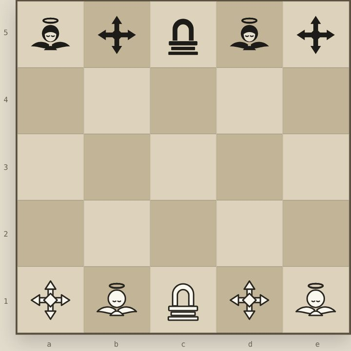

Strategy · 2 players or vs computer
Monsiv
A fast cousin of chess on a 5×5 board. Each side has a Throne, two Angels and two Crosses, and every piece steps one square at a time. The twist is the swap: trade places with a piece of your own instead of moving, and catch your opponent off guard. Take the enemy Throne or reach the far row to win.
- 5×5 board
- 5 pieces a side
- Games in 5–10 minutes